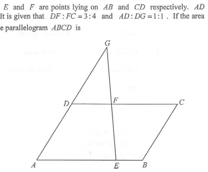

$\triangle ADF$ and $\triangle DFG$ share the same height (measured from line $AG$ to $D$),
so their areas are in the ratio of their bases along $AG$,
i.e. $AD:DG$.
Hence $$\text{area of }\triangle ADF=\text{area of }\triangle DFG=3\text{ cm}^2 \qquad (1)$$
$\triangle ACD$ and $\triangle ADF$ share the same height (from $A$ down to line $DC$),
so their areas are in the ratio of their bases $CD$ and $DF$ along the line $DC$.
Therefore $$\text{area of }\triangle ACD=\frac{7}{3}\times\text{area of }\triangle ADF \qquad (2)$$
Parallelogram $ABCD$ and $\triangle ACD$ share the same base $CD$ and the same heights,
so the parallelogram is twice the triangle.
Substituting (1) and (2) into (3):
$$\text{area of }ABCD = 2\times\frac{7}{3}\times\text{area of }\triangle ADF$$ $$=2\times\frac{7}{3}\times 3 = 14\text{ cm}^2$$So the area of the parallelogram is $14\text{ cm}^2$.
Question. In parallelogram \(ABCD\), \(E\) lies on \(AD\) with \(AE:ED=2:1\) and \(F\) lies on \(DC\) with \(DF:FC=1:1\). If the area of \(\triangle DEF\) is \(4\text{ cm}^{2}\), find the area of \(ABCD\).